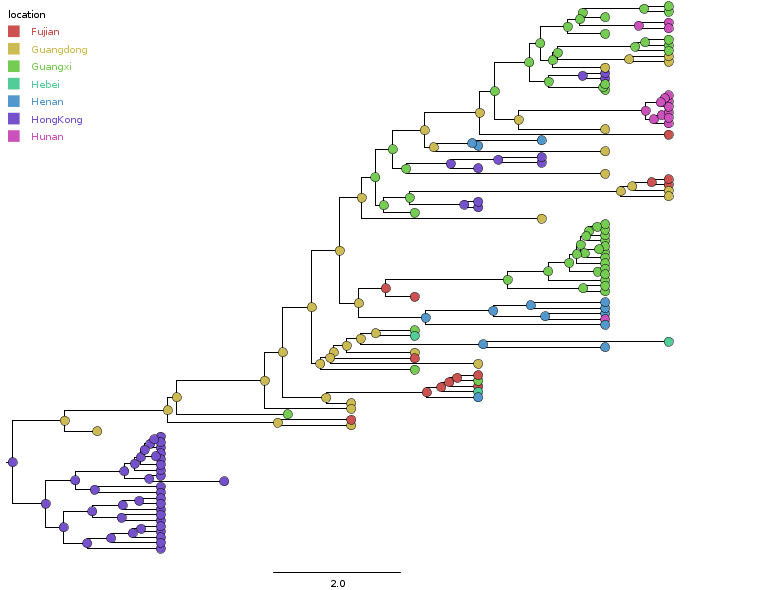

Reunião 26/02/2016
- Objetivo: usar o modelo de filogeografia para determinar o spread do Mbovis no tempo e espaço
- pretendemos fazer isso usando o Beast
- aqui temos uma explicação de como se usa o modelo
- exemplos de uso:
- um exemplo de uso: Reconstructing the initial global spread of a human influenza pandemic
- bacteria
- Entrada: um alinhamento das sequencias representativas das espécies; ano e local de origem do isolado
- saída: árvores, relógio molecular, local provável do ancestral
- adicionalmente, podemos usar um pacote do beast que usa a árvore, mais as coordenadas geodésicas e o google desenha o mapa
- Resultados para 18 M.bovis (17 nossos + AF2122)
- Árvore com reconstrução ancestral
- Linhagens ao longo do tempo
- Os resultados foram resumidos na página do projeto de filogeografia.
- Mais de um snp possível para uma mesma posição?
- Mais de uma possibilidade para o ocorrido
- Exemplo de artigos usando modelo do Lemey 2009 (Beast) Reconstructing the initial global spread of a human influenza pandemic
- Usar dados do Genbank Usando um script python, a gente pode pegar genomas depositados do genbank
- Exemplo de Saida


Alinhamento Múltiplo
Dúvidas
cat MBAN5_variants.vcf | grep "3880368" gi|31791177|ref|NC_002945.3| 3880368 . T G 55.0072 . gi|31791177|ref|NC_002945.3| 3880368 . TGACGG TGACGGTGGGGACGG 217.469 .
cat MB04303_variants.vcf | grep "21878" gi|31791177|ref|NC_002945.3| 21878 . GCCC GC,GCC 5.08359
from Bio import Entrez, SeqIO import re Entrez.email = "ribas.aca@gmail.com" handle = Entrez.esearch(db="nucleotide",retmax=400,term='Mycobacterium bovis AND ("4000000"[SLEN] : "5000000"[SLEN])',) handle.close() print record["Count"] >>> 464
Depois convertemos fasta para vcf Fasta to VCF E conferir quais tem dados suficientes para usarmosFEATURES Location/Qualifiers source 1..4426489 /organism="Mycobacterium tuberculosis" /mol_type="genomic DNA" /strain="26105" /isolation_source="Human sputum" /db_xref="taxon:1773" /country="China" /collection_date="2007-04-01"
handle = Entrez.efetch(db="nucleotide", id=lista[0], rettype="gb", retmode="text") texto=handle.read() handle.close() p = re.compile('/country="(.*)"') busca=p.search(texto) print busca.group(1) >>>China p = re.compile('/collection_date="(.*)"') busca=p.search(texto) print busca.group(1) >>>2007-04-01

Var1 Freq 1 Fujian 0.053858967 2 Guangdong 0.138256524 3 Guangxi 0.145474736 4 Hebei 0.003331483 5 Henan 0.001665741 6 HongKong 0.655746807 7 Hunan 0.002220988